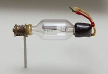

Vacuum tubes were the first method of storing data in a computer. They stored binary values by being in either an on or off state, marking a 1 or 0. If it was on, it signified 1 because there was a metal plate that would detect the protons released by the heat. Computers needed a very large amount of these and this caused the early computers to be inconviently large. Computers needed thousands of these, and each individual tube was about the size of a thumb.

Transistors were a huge step in the direction of making computers smaller. While the computers still needed just as many transistors, they were so much smaller, about the size of a thumb tail. This was the beginning of computers being able to be personally owned while still being quite large compared to modern computers, they were getting smaller. The biggest drawback was how difficult it was. The biggest issue that was still present with trasistor computers, was the difficult maitnence, all it took was one transistor to blow out and now you had to find it, remove and replace it by soldering it back into place.
Integrated Chips, or more commonly known now as the CPU, is the current and longest standing method of storing binary values. These are made of silicon wafers that are machined to such a high precision that even under 1000x magnification still has intentional detials. One of these chips can fit in the palm of your hand, and can store way more binary values than either the tubes or transitors. The average computer chip running on Windows 11 can hold about 8*10^12 bits of data at one time. You would need 8 transistors just to be able to store 1 bit, or 64 trillion to have the same computing power. This kind of convience and power is what allowed people to own computers that can just be kept on a desk like it isn't the pinnacle of human invention.